Courses
Undergraduate
Semester Wise Three years B.Sc. Honours Course
(Under CBCS, University of Calcutta)
Intake Capacity : 36
Postgraduate
M.Sc. in PURE MATHEMATICS
(Under CBCS, University of Calcutta)
Special papers offered to PG Students in pure mathematics
- Rings and Modules
- Advanced Complex Analysis.
| 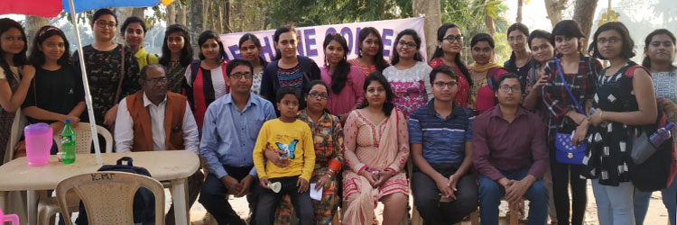 |
| 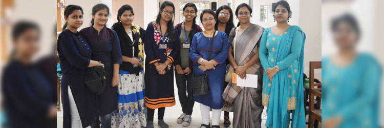 |
About the Department
The origin of the Under Graduate department can be traced back to 1894. Many eminent mathematicians like Professor KaliprasannaDasgupta, Professor Shyamadas Mukherjee and Professor Prabodh Chandra Gupta have served the department.The college was affiliated to the Intermediate Arts course in mathematics in 1915-1916 and for B.A. general course in 1921-1922. In 1923 the college became affiliated to the intermediate science course as well. The department received the affiliation in Honours course in 1923-24.
The Post Graduate Department of Mathematics at Bethune College, Kolkata started in 2007. Eminent scholars like Professor M. K. Sen, Professor ShobhakarGanguly, Late Professor Jyoti Das and Late Professor SomeshBagchi extended their hands of cooperation to the PG Department in its formative stage. Presently 12 teachers are engaged in the Department in different capacities, including full-time teachers and distinguished retired professors from Calcutta University, Jadavpur University, Burdwan University, North Bengal University and Indian Statistical Institute.
The Department offers a two-year four-semester MSc, degree (CBCS) course affiliated to the Department of Pure Mathematics, University of Calcutta. The Department admits 16 students through the centralized admission process of the University. The Department is well-equipped with mathematical-computational laboratories and modern tools including smart classroom-cum-gallery for organizing seminars and interactive sessions.
Faculty
| 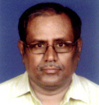 | Dr. Pratap Chandra Ray Professor and HOD M.Sc.,Ph.D. |
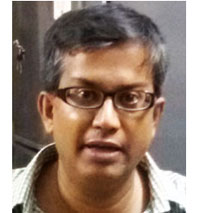 | Dr. Sanjib Basu Assistant Professor M.Sc.,M.Phil.,Ph.D. |
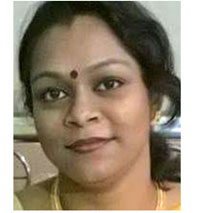 | Dr. Rupa Pal Assistant Professor M.Sc., Ph.D. |
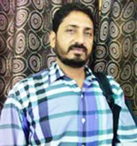 | Sri. Prasenjit Singha Assistant Professor M.Sc.,Ph.D. |
| 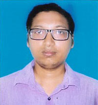 | Dr. Debprasad Pal Assistant Professor M.Sc.,Ph.D. |
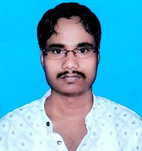 | Dr. Soumen Samanta Tarak Sudha Fellow M.Sc.,M.Phil.,Ph.D. |
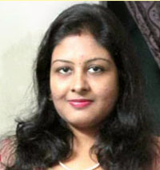 | Dr. Bithi Chattaraj State-Aided College Teacher Category-I M.Sc.,Ph.D. |
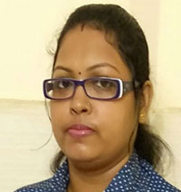 | Smt. Barnali Mondal State-Aided College Teacher Category-II M.Sc. | 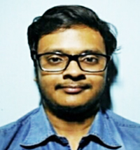 | Sri. Aninda Banerjee Tarak Sudha Teaching Fellow M.Sc. |
 |
Sri. Lokenath Ganguly JMD Teaching Fellow M.Sc. |
Infrastructure